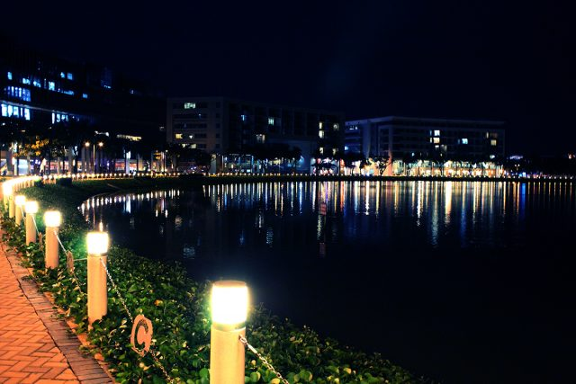
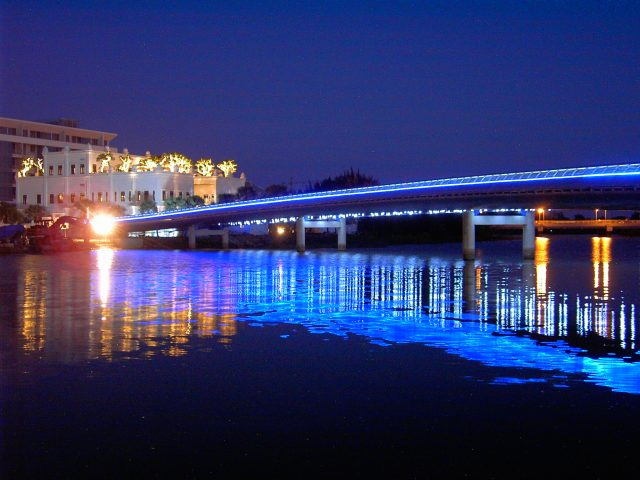

Hồ Bán Nguyệt tọa lạc ở khu đô thị mới Phú Mỹ Hưng, quận 7, thành phố Hồ Chí Minh. Đây là công trình được lấy cảm hứng từ nước, từ lâu đã trở thành một phần không thể thiếu trong trái tim của người dân Sài Gòn, một biểu tượng đẹp đẽ và thơ mộng, một chốn hẹn hò lí tưởng cho những đôi trai tài gái sắc, cho những nhóm bạn, hay cho gia đình trong một buổi tối yên bình.
Nằm vắt ngang qua hồ Bán Nguyệt là cầu Ánh Sao, một dải ánh sáng đẹp đẽ ở lòng Sài Gòn. Tên gọi Ánh Sao cũng là bởi về đêm, khi cầu lên đèn, trông không khác nào một dải ánh sáng, tựa như những vì sao sáng lấp lánh nơi lưng chừng bầu trời, tạo nên một khung cảnh vô cùng lãng mạn và huyền ảo.
Hiện nay, hồ Bán Nguyệt là một trong những tâm điểm của Sài Gòn với khung cảnh lung linh, lấp lánh và những dịch vụ, trung tâm thương mại không ngừng phát triển, là thiên đường cho những vị khách muốn tìm đến sự thoải mái, rộng lớn, yên bình bởi không gian rộng và thoáng đãng của nó.
Cầu Ánh Sao dài 154m, hình dáng cong cong như mặt trăng, dọc chiều dài cầu được gắn đèn led đổi màu liên tục khiến cho những người đi trên cầu có cảm giác mình đang sải bước trên những vì sao.
